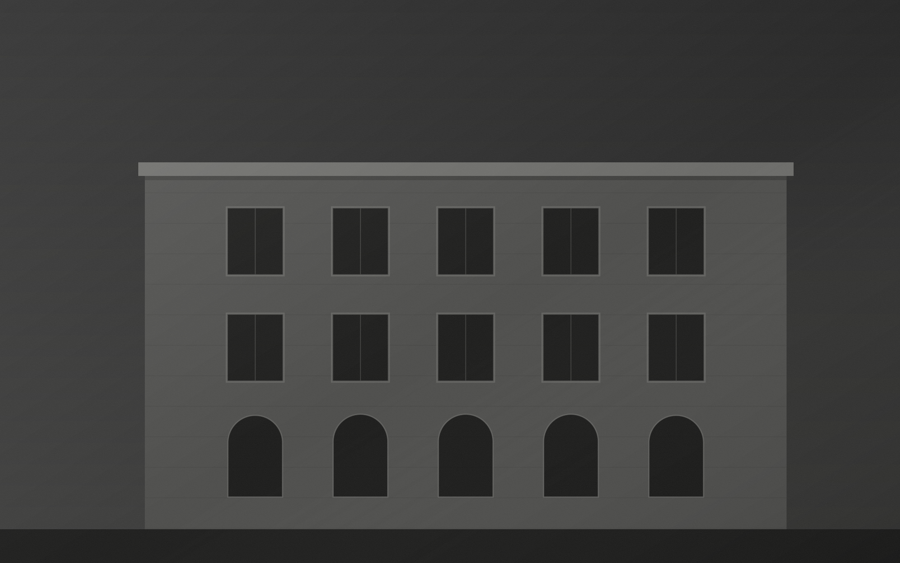
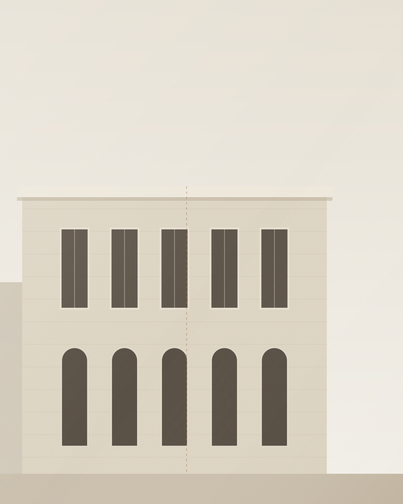
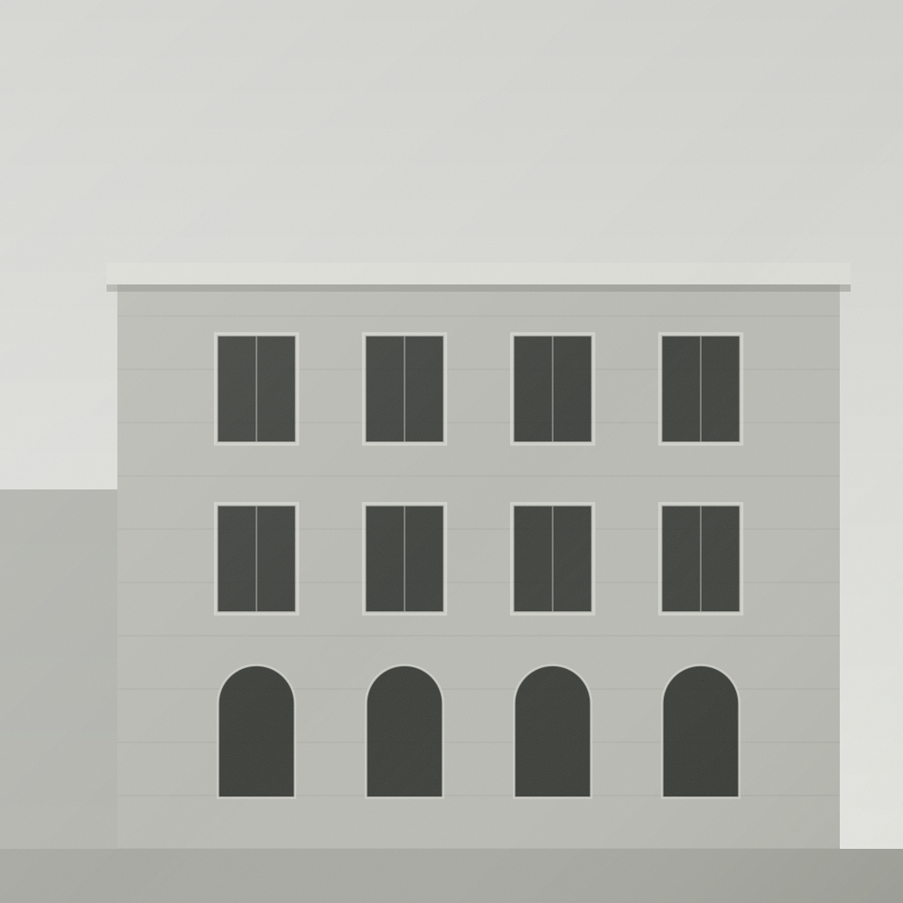

Tespit ve Belgeleme
Yerinde inceleme, ölçüm, fotoğraf ve hasar haritalarıyla mevcut durumun eksiksiz kaydı.

Rölöveden restitüsyona, restorasyon projesinden uygulama kontrollüğüne — kültür varlıklarının korunma sürecinin tamamını tek bir uzman ekiple yürütüyoruz.

Rölöve ÇalışmasıFatma Kocaova Mimarlık, mimari restorasyon alanında uzmanlaşmış bir tasarım ve danışmanlık ofisidir. Her yapıyı kendi tarihsel bağlamı, malzemesi ve yapım tekniğiyle birlikte ele alır; müdahaleyi en aza indiren, geri dönüşü mümkün ve belgelenebilir çözümler üretiriz.
Çalışmalarımız belgeleme ile başlar. Ölçülü rölöve, malzeme ve hasar analizleri, arşiv araştırması ve karşılaştırmalı çalışmalar; restitüsyon ve restorasyon kararlarının bilimsel bir zemine oturmasını sağlar. Süreci Koruma Bölge Kurulu onaylarından şantiye uygulamasına kadar takip ederiz.
Fatma Kocaova
Yüksek Mimar · Restorasyon Uzmanı
Tescilli yapılar için belgelemeden uygulamaya uzanan bütüncül bir hizmet zinciri.
Yapının mevcut durumunun ölçülü çizim, fotogrametri ve hasar tespitiyle belgelenmesi.
Detay / 02Arşiv, iz ve karşılaştırmalı araştırmalarla yapının özgün dönem kurgusunun yeniden okunması.
Detay / 03Koruma ilkeleriyle uyumlu müdahale kararları, detay çözümleri ve uygulama paftaları.
Detay / 04Şantiye sürecinde malzeme, işçilik ve müdahale doğruluğunun yerinde denetlenmesi.
DetayFarklı ölçek ve dönemlerden, koruma odaklı proje ve uygulamalar.
Her proje aynı disiplinli sırayı izler: önce anlamak, sonra karar vermek.
Yerinde inceleme, ölçüm, fotoğraf ve hasar haritalarıyla mevcut durumun eksiksiz kaydı.
Arşiv taraması, malzeme ve yapısal analizler; yapının dönemsel değişimlerinin okunması.
Restitüsyon ve restorasyon projelerinin üretimi, Koruma Bölge Kurulu süreçlerinin yönetimi.
Şantiye kontrollüğü, geleneksel tekniklerin denetimi ve tamamlanan işin belgelenmesi.
Tamamlanan Proje
Yıllık Deneyim
Tescilli Yapı
Çalışılan İl
“Bir yapıyı korumak, onu dondurmak değil; taşıdığı bilgiyi ve emeği bugünün hayatına yeniden bağlamaktır.”
Tescilli bir yapınız, devam eden bir kurul süreciniz veya restorasyon fikriniz mi var? Ön görüşme için bize yazın; kapsamı ve yol haritasını birlikte netleştirelim.
